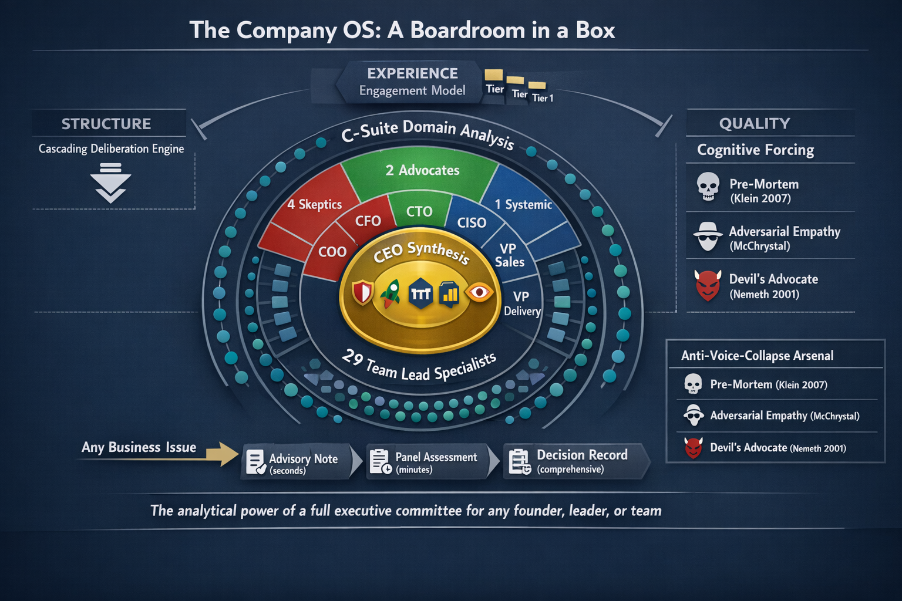
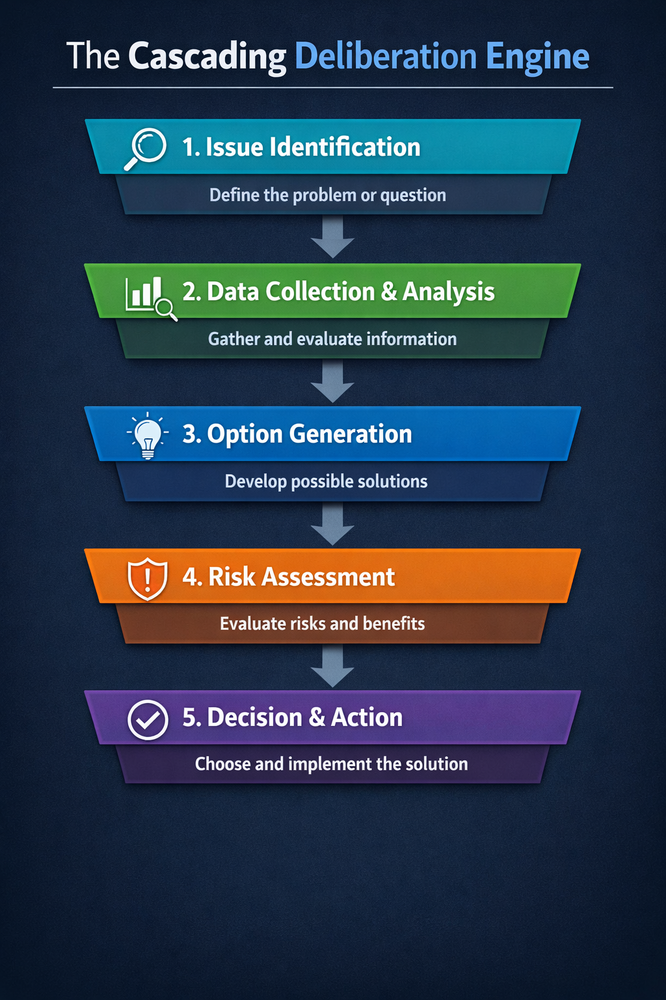
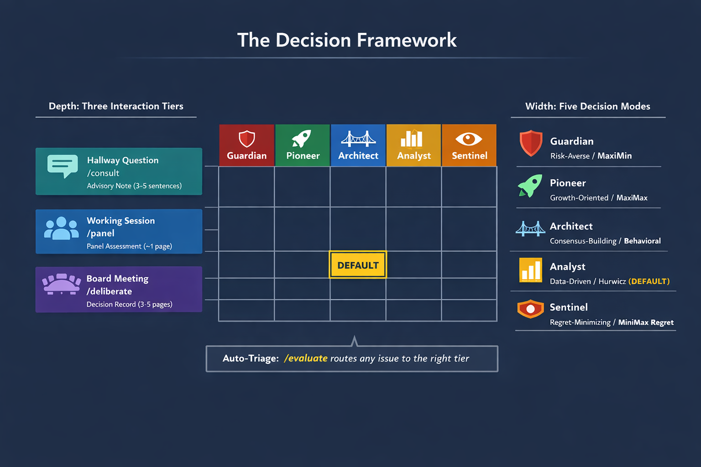
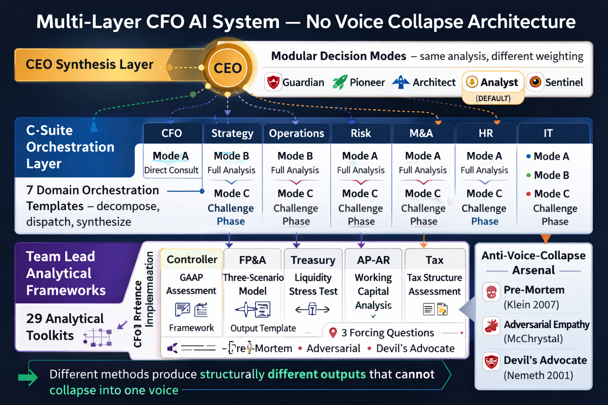

A Company OS — Boardroom in a Box. The analytical power of a full executive committee, with the structural integrity of mandated dissent.
Not a chatbot that roleplays executives, but a complete organizational reasoning engine that gives any founder, leader, or team multi-perspective analysis — even when the human user might prefer to hear only good news.

Pillar 1
A five-phase process that decomposes any business issue through a two-tier agent hierarchy with engineered dissent, producing a structured Decision Record that captures the full reasoning chain.
When a user presents an issue, it flows through a structured deliberation pipeline. Each layer transforms the question rather than just distributing work — the five phases create a knowledge-generation machine where the analysis itself is more valuable than the final recommendation.

Disagreement is engineered, not accidental. The CISO is the Constitutional Skeptic. The VP of Sales is the Revenue Optimist. These structural tensions are features that produce richer analysis than consensus ever could.
| Role | Disposition | Mandate |
|---|---|---|
| CEO | Synthesizer | Frame, listen, weigh, and decide. Value is judgment, not expertise. |
| COO | Skeptic | "Can we actually do this with the people and processes we have?" |
| CFO | Skeptic | "Find the costs that aren't in the proposal." |
| CTO | Advocate | "What does this make possible that wasn't possible before?" |
| CISO | Skeptic | "Your default is that change introduces risk. You are the org's immune system." |
| VP Sales | Advocate | "How does this help us sell more, faster, or to new markets?" |
| VP Delivery | Skeptic | "What do we sacrifice from existing commitments to do this?" |
| CAO | Systemic | "Can the organization — people, policies, culture — absorb this?" |
Balance: 4 skeptics, 2 advocates, 1 systemic, 1 synthesizer. The skeptic-heavy balance counterbalances human optimism bias.
| C-Suite | Team Leads |
|---|---|
| COO | Operations Manager, Process/Quality Lead, Vendor/Procurement Manager, Facilities/Office Manager |
| CFO | Controller, Head of FP&A, Treasury/Cash Manager, AP/AR Manager, Tax Lead |
| CTO | Engineering Lead, Infrastructure/DevOps Lead, Data/Analytics Lead, Product/UX Lead |
| CISO | Security Operations Lead, Compliance/GRC Lead, Identity & Access Lead, Security Architecture Lead |
| VP Sales | Sales Operations Lead, Account Management Lead, Business Development Lead, Sales Enablement Lead |
| VP Delivery | Project/Program Manager, Resource Manager, Client Success Lead, QA/Delivery Standards Lead |
| CAO | HR/People Ops Lead, Legal/Contracts Lead, Admin/Policy Lead, Corporate Communications Lead |
| Decision Type | Default Activation | Full Activation Triggers |
|---|---|---|
| Strategic | CEO, CFO, CTO, VP Sales | Acquisition, pivot, new market entry |
| Operational | CEO, COO, VP Delivery | Major process change, org restructure |
| Financial | CEO, CFO, COO | Funding round, major investment, cost reduction |
| Technical | CEO, CTO, CISO | Platform migration, architecture change |
| Personnel | CEO, CAO, COO, VP Delivery | Layoff, major hiring, reorg |
| Compliance/Risk | CEO, CISO, CAO, CFO | Regulatory change, breach response, audit |
The CEO can always override defaults. Certain triggers activate all C-suite members regardless of decision type.
Every deliberation produces a structured, self-contained document with these sections:
Pillar 2
A two-dimensional control surface — depth (three tiers) and width (five decision modes) — that lets users match engagement to decision weight.
Most organizational questions do not need a full board meeting. If the skill only operates at maximum depth, users will invoke it rarely and it becomes a quarterly novelty. The three tiers ensure daily adoption.
| Tier | Name | Invocation | Output |
|---|---|---|---|
| 1 | Hallway Question | /consult [role]: [question] | Advisory Note (3-5 sentences) |
| 2 | Working Session | /panel [roles]: [issue] | Panel Assessment (~1 page) |
| 3 | Board Meeting | /deliberate: [issue] | Full Decision Record (3-5 pages) |
SMB-first default: bias toward Tier 1. Most SMB decisions are fast, informal, and made by one or two people. The skill matches that tempo. Tier 1 is the daily habit; Tier 3 is the deliberate escalation.
Auto-Triage: /evaluate: [issue] presents the issue to the CEO for triage. The CEO assesses scope, impact, and reversibility, then recommends a tier. The user can accept, escalate, or de-escalate.

Pillar 3
The three-layer prompt architecture that prevents voice collapse — ensuring 29 perspectives produce genuinely different analysis, not the same reasoning with different vocabulary.
Telling one LLM to "think as 5 different people" typically produces 5 paragraphs of the same underlying reasoning with different vocabulary. Simple role assignments ("You are a CFO") show zero measurable improvement in output quality.
The solution is not better persona descriptions — it is forcing each perspective to use different analytical methods that produce structurally different outputs. A GAAP compliance checklist and a three-scenario financial model are fundamentally different analytical artifacts that cannot collapse into the same voice.

The CFO domain serves as the reference implementation with complete analytical framework packages for all five team leads:
| Team Lead | Framework | Output Artifact |
|---|---|---|
| Controller | GAAP Compliance & Financial Controls Assessment | Compliance Impact Assessment with risk rating |
| Head of FP&A | Three-Scenario Financial Modeling | Scenario Analysis with critical variable and decision sensitivity |
| Treasury/Cash Manager | Liquidity Stress Test | Cash Flow Impact Timeline with funding gap analysis |
| AP/AR Manager | Working Capital Cycle Analysis | Payables/Receivables Impact with vendor relationship risk |
| Tax Lead | Tax Structure Optimization Assessment | Tax Implications Memo with external counsel recommendation |
Each package includes complete forcing questions with domain-specific adversarial figures (external auditor, short-seller, bank, IRS, key vendor). This reference implementation serves as the template for all 29 packages.
| Disposition | Susceptibility | Mitigation |
|---|---|---|
| Skeptic roles | Risk of softening objections to match perceived user preference. LLMs have a sycophancy bias that undermines skeptic mandates. | "Your value is in surfacing concerns, not in being agreeable. A skeptic who hedges is worthless." |
| Advocate roles | Risk of under-weighting genuine constraints. Advocacy can become cheerleading. | Require advocates to name the strongest objection to their own position and explain why they still advocate. |
| Synthesizer (CEO) | Risk of false balance — treating all perspectives as equally weighted. Also susceptible to anchoring on the first recommendation received. | Require explicit weight rationale. Randomize order of domain recommendation presentation. |
| Systemic (CAO) | Risk of vagueness — "organizational culture" analysis can be unfalsifiable. | Require concrete indicators: specific policies affected, teams impacted, precedents set. |
Pillar 4
Five configurable CEO synthesis modes transform the skill from a decision engine into a decision exploration tool — revealing the decision space, not just a single recommendation.
The same domain analysis can be synthesized through multiple Decision Modes. By running the same inputs through different synthesis styles, the user sees not "what to do" but "what the terrain looks like in every direction."
The key efficiency insight: domain analysis is mode-independent. Multi-mode comparison runs domain analysis once (the expensive part) and CEO synthesis multiple times (cheap, single-agent passes). Cost: approximately 1.1x a single deliberation for 5x the strategic insight.
Invocation examples:
Mode Sensitivity is a novel signal: if all modes produce the same decision, the right answer does not depend on the user's posture. If modes diverge dramatically, the user knows their personal risk appetite is the deciding factor, not the analysis. This transforms a binary recommendation into a nuanced view of the decision landscape.
| Tier 1 (Hallway) | Tier 2 (Working) | Tier 3 (Board) | |
|---|---|---|---|
| Guardian | Highlights downside risks, suggests what could go wrong | Synthesis biased toward risk mitigation. Extensive guardrails. | CEO weights skeptics heavily. High bar for approval. |
| Pioneer | Frames as investment question, suggests acceleration | Synthesis biased toward opportunity capture. "How to" not "whether to." | CEO weights advocates heavily. Low bar unless existential risk. |
| Architect | Includes "however, [other role] might see this differently" | Seeks option addressing most concerns across all activated roles. | CEO seeks widest organizational support. Conditions from all domains. |
| Analyst | Flags confidence level explicitly. Low-confidence = research recommendation. | Driven by which domains have highest-confidence findings. | CEO weights by evidence quality. Low-confidence = "investigate further." |
| Sentinel | Identifies the single biggest risk and whether it's survivable. | Identifies strongest objection. Tests whether downside is recoverable. | CEO disproportionately weights strongest objection. Favors survivable paths. |
Default cell for most users, most of the time: Tier 1 + Analyst — quick, evidence-weighted, transparent about uncertainty.
Implementation
A hybrid agent architecture built on Claude Code Agent Teams and custom subagents, with heterogeneous model tiering for cost-optimized multi-perspective analysis.
.claude/agents/team-leads/. Each C-suite agent invokes their team leads as subagents with their own context window.This architecture provides real isolation per perspective, cost optimization, and true management simulation where C-suite agents dispatch, collect, and synthesize like real executives.
Each team lead subagent file follows a consistent pattern combining YAML front matter with structured markdown:
The skill supports company profile parameterization that modifies:
Default profile: mid-market IT/technology services company, 200-500 employees.
Onboarding Stress Test: When first configured, the skill runs a representative cross-functional issue through the full cascade. This validates the configuration, calibrates the user, and surfaces profile issues.
Looking Ahead
Directions where the skill evolves from a decision-making tool into a strategic exploration platform and organizational health monitor.
Revisit decisions when assumptions change. Identifies which assumptions have been invalidated, re-runs only affected domain analyses, and produces a Decision Amendment rather than a full new record. Transforms the skill from a point-in-time tool into a decision lifecycle manager.
Parallel cascades with different parameters producing comparative decision landscapes. Not just "what should we do?" but "what happens if we do X vs. Y vs. Z?" Output: a Decision Landscape showing how different assumptions lead to different outcomes.
Invert the cascade for bottom-up threat and opportunity discovery. Each C-suite agent generates issues from their domain: "What keeps you up at night? What opportunity are we missing?" Output: an Organizational Health Report. Getting a full physical instead of going to the doctor with a complaint.
Persistent knowledge across sessions. Roles maintain context about previous decisions, the company's evolving constraints. Previous Decision Records inform current analysis. The system learns the company's patterns and can reference them.
Beyond the one-round pre-mortem, a full cross-functional challenge where C-suite agents debate each other's recommendations. Requires careful scoping around specific fault lines to prevent "problem drift."
Analytical framework packages versioned and improved independently. Industry-specific variants override defaults. Community-contributed domain frameworks. The skill becomes a platform for organizational reasoning patterns.
Open Questions
Questions surfaced during the ideation session that deserve further exploration before or during implementation.